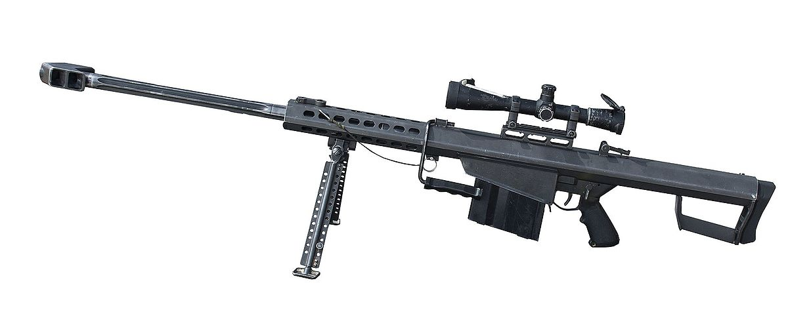
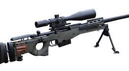
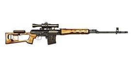
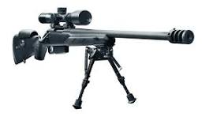
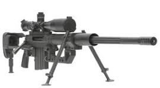

Sniper rifles are specialized firearms designed for long-range precision shooting, often used by elite military units, law enforcement marksmen, and special forces. Unlike standard rifles, sniper rifles are engineered for extreme accuracy, featuring high-quality barrels, precision optics, and powerful ammunition. These rifles allow a trained sniper to engage targets from several hundred to even over a thousand meters away with deadly accuracy.
Snipers are not just sharpshooters—they are skilled tactical operators trained in camouflage, stealth, surveillance, and range estimation. In military operations, snipers play a critical role in reconnaissance, neutralizing high-value targets, and providing overwatch for ground units. Famous sniper rifles include the Barrett M82, capable of disabling vehicles, the Dragunov SVD, used by various armies for decades, and the CheyTac M200, renowned for its extreme long-range performance. With technological advancements, modern sniper rifles now feature thermal scopes, rangefinders, and modular designs that allow them to adapt to different missions.

Barrett M82
$8,000
A powerful semi-automatic sniper rifle used for long-range targets.

Remington 700
$1,200
Widely used bolt-action sniper rifle known for precision and reliability.

Accuracy AW
$3,500
Highly accurate bolt-action rifle favored by military snipers worldwide.

Dragunov SVD
$2,000
Legendary semi-automatic sniper rifle used by many armed forces.

Tikka T3
$1,000
Reliable bolt-action rifle popular among hunters and tactical shooters.

CheyTac M200
$11,000
Extreme long-range sniper rifle known for incredible accuracy over miles.